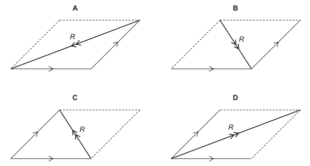

1. The diagram shows arrows representing two vector quantities. Which diagram shows the resultant R of these two vectors?[cite: 1]

2. Which set of quantities are all vectors?[cite: 1]
3. A student determines the circumference of a golf ball. Which instrument gives a reading that is the circumference of the golf ball?[cite: 1]
4. Which quantity is a vector?[cite: 1]
5. Is mass a scalar or a vector, and is acceleration a scalar or a vector?[cite: 1]
6. The diameter and the length of a thin wire, approximately 50 cm in length, are measured as precisely as possible. What are the best instruments to use?[cite: 1]
7. Newton\'s third law involves two quantities which are equal in size and opposite in direction. What is the unit for these two quantities?[cite: 1]
8. Which quantity is a scalar?[cite: 1]
9. During an experiment to find the density of a stone, the stone is lowered into a measuring cylinder partly filled with water. Which statement is correct?[cite: 1]
10. The diagram shows a micrometer scale. Which reading is shown?[cite: 1]